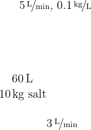
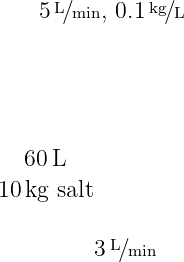
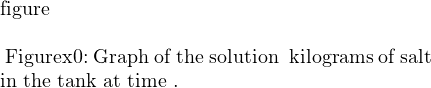

Stuff about Modeling with First Order Equations
One of the main reasons to study and learn about differential equations, particularly for scientists and engineers, is their application and use in mathematical modeling. Since the derivative of a function represents the rate of change of that quantity, if we can use physical or scientific principles to develop an equation for the rate of change of some quantity in terms of the quantity and time, there’s a chance that we can write a differential equation for this quantity and solve it to determine how the quantity will change.
The process of mathematical modeling involves three main steps. The first of these is to write the model. This part comes from basic science or engineering principles and involves writing a differential equation that fits the given situation. If we can determine the rate at which a quantity will change based on the surrounding factors, we have a good shot of getting to such an equation. One main principle that can be used to write these equations is the accumuilation equation, which will be discussed in the next subsection.
The second step of this process is to solve the differential equation. This can mean either an analytic solution or a numeric one, and this is where the work of this class comes into play. We are going through a bunch of different techniques for solving differential equations and analyzing the overall behavior of such equations so that we can use them in this way. The end goal is to get an equation or a graph for how the quantity that we made a model for is going to change in time.
The final step of the process is to validate the model by comparing with experimental data. Once we have written the model and solved the corresponding differential equation, we want to make sure that the model works. To do this, we can take a new version of the original scenario, run the model as well as the physical experiment and see how the results compare. If the results are “close” (in whatever sense makes logical sense for the problem), then we have a good model and can keep it. However, if our results differ significantly, then the model we used probably doesn’t apply to this problem. We need to go back to step 1 to try to figure out a better model for the physical situation in order to get more accurate results.
Why do we care about mathematical modeling? The biggest thing that it does from an engineering point of view is reduce the need for repeated testing. If we have a mathematical model that works for a given physical system, we can see how the system will be have under slightly different conditions and with different initial conditions without needing to run the physical experiment over and over again. We can do all of this testing on the model, and since we have validated the model, we can assume that the actual results will be similar. This also allows us to change some aspects of the physical situation to try to optimize it, but do so just by modifying the mathematical model, not the physical setup. This can significantly cut down on costs and allow for more optimal system design at the same time.
The accumulation equation is one of the simplest general mathematical formulations that can be used to develop mathematical models. This equation comes down to the fact that the rate of change of some quantity should be equal to the rate at which it is being added minus the rate at which it is being removed. If we let be the quantity in question, this can be written as
This may seem fairly simple. However, it shows up in many places in science and engineering. Any mass or energy balance equations are examples of accumulation equations. These types of equations can also be written for the accumulation of momentum, and doing so for fluids gives rise to the Navier-Stokes equations, providing the basis for several fields of engineering. The examples that we see here will be simpler than that, but the idea is still the same.Solution: To solve this problem, we use the accumulation equation (accum:eqn) on the amount of salt in the tank. In order to compute with this, we recognize that in terms of mass of salt moving into the tank
and similarly for the mass of salt leaving the tank.If we let represent the amount of salt in the tank at any time (which is the goal of the problem), we can write a differential equation for this using the accumulation equation (accum:eqn). This gives us that
For this problem, we have thatThe last of these lines comes from the fact that the tank is “well stirred” or “well-mixed.” This implies that the concentration of salt in the water leaving the tank is the same as the concentration in the tank, which we can compute as . In this case, since the flow rate in and out are both 3 gal/min, the volume of water in the tank is fixed at gallons, so we can put this in the equation.
Therefore, our equation becomes
We can rewrite this equation as which we recognize as a first order linear equation. We can then solve this using the method of integrating factors. Our factor is which we can multiply on both sides of the equation to obtain The left side of this is a product rule derivative, so we can integrate both sides to obtain We can then isolate to get our general solution as Our initial condition tells us that . Plugging this in gives that so the solution to the initial value problem, and thus our calculation for the amount of salt in the tank at any time , isAs , we see that the exponential term goes to zero. This leaves us with 14 lbs of salt in the tank after a long time. This makes some sense because this would give us a concentration of lb/gal, and that was exactly the concentration of the in-flow stream. It makes sense that after a long time of mixing and removing water from the tank, the concentration of the tank would match that of the incoming stream.
___
The same principle works for other types of examples, including those where the volume of the tank is not constant in time.
Solution: We can again use the accumulation equation to write
In this example, we haveOur equation is, therefore,
Or in the form (lineq:eq1)Let us solve. The integrating factor is
We multiply both sides of the equation to get
 

We need to find . We know that at , . So
orWe are interested in when the tank is full. The tank is full when , or when . So
See Normally a reference to a previous figure goes here. for the graph of over .The concentration when the tank is full is approximately 0.1186 kg/liter, and we started with or 0.167 kg/liter.
___
For the previous example, we obtained the solution
which is valid and well defined for all positive values of (it has an issue at , but we aren’t concerned about that here). However, as a differential equation that represents a physical situation, it is not valid for all positive values of . The issue here is that the tank is full at . Therefore, beyond this point, while the function still exists, it is not a valid model for this physical system. Once the tank fills, you can’t keep adding and removing water at the same rates that you have been up until this point, because something is going to break with the system. The same goes for if you are removing water from the tank at a faster rate than you are adding it, because then the tank will empty at some point in time and beyond that, the model equation no longer represents the system.The same ideas apply to problems involving interest compounded continuously. For an interest rate of , the “rate in,” or the rate at which the money in the account is increasing, is where is the amount of money in the account. Taking this along with other factors that may affect the balance of the account allows us to write a differential equation, which we can solve to determine what the balance will be over time.
Solution: We will use the function to model the balance of the account over time, where is in years. Since the owner withdraws $50 per month, this means that they withdraw $600 over the course of the year. This means that the differential equation we want is We can solve this equation by the integrating factor method. For , we need to take . Thus, the solution to the initial value problem is Since the coefficient in front of is positive, this means that the account balance here will grow in time.
For the second part, we need to adjust the withdrawal amount to see how the solution changes. If we let be the monthly withdrawal amount, then we have the differential equation The same solution method gives us
If , then the account balance will eventually go to zero. Therefore, we need , and since , we have that For this to be equal to zero, we need Thus, the owner can withdraw $150 per month and keep the account balance positive.
___
To end this section, we will analyze the example that was presented at the very beginning of the book.
Solution: As described in that first section, we know that the differential equation that we can write for this situation is
and that the initial condition for the velocity if . Since we have gravity as a positive 9.8, this means that the downward direction is positive, so the object being thrown downward at means that it is positive. We then need to solve this initial value problem, which we can do using first order linear methods. The equation can be written as which has integrating factor . After multiplying this to both sides and integrating, we get that or thatUsing the initial condition, we get that
so that and the solution to the initial value problem is Then, to determine the velocity at , we can plug into this formula to get that__
All of these examples are based around the same idea of the accumulation equation. We need to determine the quantity that is changing as well as all of the factors that cause it to increase and decrease. These get combined into a differential equation which we can solve in order to analyze the situation and answer whatever questions you want about that physical problem. Keeping these ideas in mind will help you approach a wide variety of problems both in this class as well as future applications in engineering classes and beyond. 